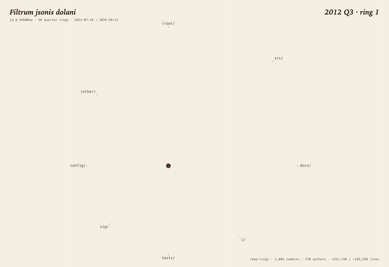

repo-rings is an agent skill for Claude Code, Codex and Cursor. It cuts any git repository open like a tree: the pith is the first commit, the bark is HEAD, every ring is a week, month, quarter or year of commits. The page grows from the pith to the bark, and every field note on it cites a real tag or commit, checked against git before rendering.
npx skills add majiayu000/repo-rings
Then ask your agent: “Draw the tree rings of this repository.” No API keys, no network; needs git and Bun.

Famous open-source repositories, read like trees. Open one to watch it grow and to read any ring.